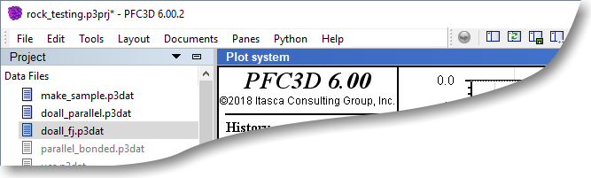
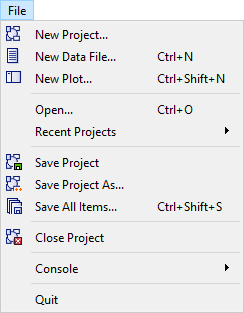

项目的工作方式

图 1：程序标题栏显示项目名称（注意名称旁的星号表示该项目当前有未保存的更改）。
项目本质上是程序中“打开”的内容，因此其名称会显示在程序标题栏中程序名称和版本旁边的位置。
项目的操作对用户而言基本上是透明的——它“就在那里”。除了最初创建它以及随后保存它之外，用户不会对项目做任何事情。请注意，项目是与程序相关的少数没有关联命令的实体之一（见下文“处理项目”）。
由于项目承担着跟踪程序当前状态以及跟踪其使用资源的工作，因此程序中始终必须有一个正在运行的项目——即使程序在未打开任何项目的情况下启动也是如此（见下文）。在这种情况下，程序会创建一个未保存的“临时”项目，以在程序使用期间完成必要的工作。与对现有项目的未保存修改一样，在退出程序或尝试更改当前项目（即 File –> New Project...、File –> Close Project 等）时，系统会提示用户保存或丢弃该“临时”项目。
程序启动
启动 对话框负责在程序首次启动时向用户提供消息。此外，“启动选项”控件通过一组选项，提供了指明项目接下来应发生什么的方式。


此处所做的选择会持续保留，作为以后启动时的初始选择。此处的设置也会自动设置 选项 对话框中 启动（Startup） 页面上对应的“项目”选项。
处理项目

对项目的所有可能操作都只能从 File 菜单执行。
打开
- 使用 File –> Open 命令
保存
- 使用 File –> Save Project
另存为
- 使用 File –> Save Project As... 命令。这将打开一个 Save 对话框，可指定新项目文件的文件夹和名称，从而复制当前项目。该操作还会关闭基础项目，并使新创建的副本成为活动项目。
警告
当使用 Save As... 复制项目时，项目所跟踪的文件并不会一并复制，这意味着“旧”项目和“新”项目都会链接到这些项目项。
关闭
- 使用 File –> Close Project 命令
术语约定
项目“中”的文件：在本文档中，数据文件、已保存状态或其他资源可能被称为“在项目中”，这表示项目当前正在跟踪它。它是项目“知道”的文件。相比之下，不在“项目中”的文件不会被项目文件跟踪。所有这些最容易通过 i 项目（Project） 窗格来直观理解：该窗格中显示的文件就在项目中，若未显示，则不在项目中。
另请参见
文件菜单（File Menu），了解 File 菜单上出现的每条命令的说明
| 这些内容对您有帮助吗？… | FLAC3D © 2019, Itasca | 原文更新于 2020 年 10 月 8 日 |